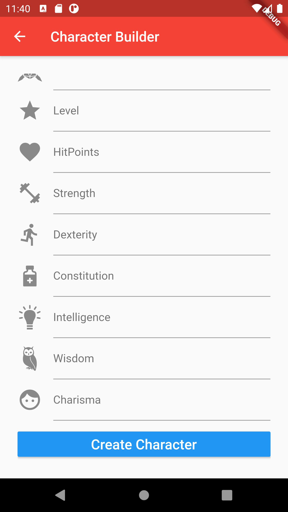
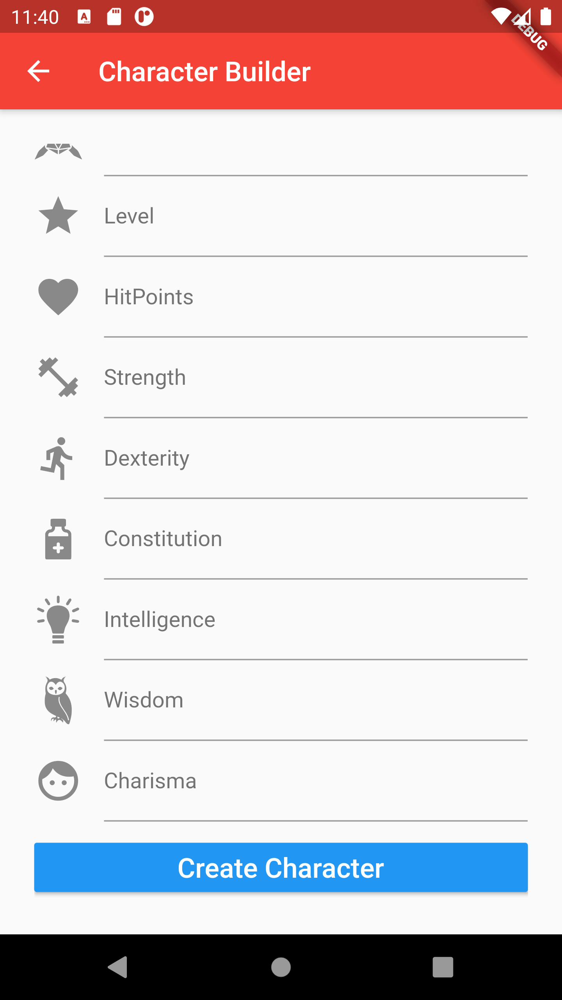

Dungeons & Characters App
This application was made in Google's mobile platform Flutter. Flutter uses the programming language Dart. Find the code here, on my Github to check out the source code. The app is designed and built for Dungeons and Dragons (D&D) 5th edition. It's purpose is for tracking and organizing characters on the go without the need of a character sheet. Character sheet's in D&D get rewritten all the time and are fairly complicated when it comes to calculations. This app will do all the calculations and keep track of your notes per character, eliminating the need for a paper character sheet.
Character Screen
The start screen of the app that allows you to create a new character or select an already existing character from ones you've already made. The capacity of characters is unlimited! You can also delete characters from swiping left or right on a specific character. A simple and elegant looking opening screen!
Character Creation
The character creation screen guides you through making a new character. It provides all the necessary components to making a character so you don't have to remember them! Simply put in all the stats that are going into your new character and allow the app to do the rest.
 

Individual Character Screen
The character screen keeps track of all your current characters stats, abilities, skills, modifiers, levels, and proficiencies. It'll calculate your ability modifiers and skill modifiers for you! This means less time doing math and more time playing D&D. Everything is also editable in the page and wont take you to a complete new page to edit values, meaning you can edit them whenever you want. Everything is minimialistic and stylish to make it pleasing to look at.